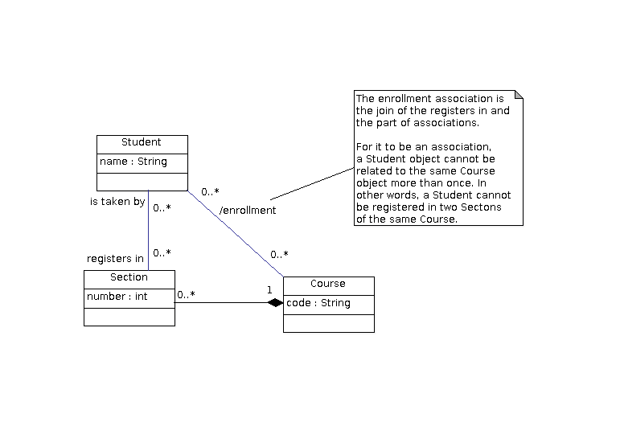

The enrollment association is the join of the registers in and the part of associations.
For it to be an association, a Student object cannot be related to the same Course object more than once. In other words, a Student cannot be registered in two Sectons of the same Course.
© 2013 Ken Baclawski. All rights reserved. Redistribution and use in source and binary forms, with or without modification, are permitted provided that redistributions and uses retain this copyright notice.